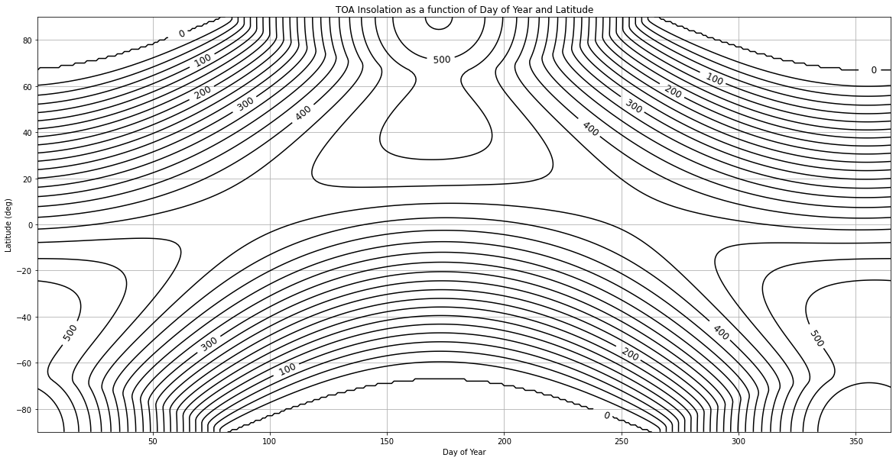
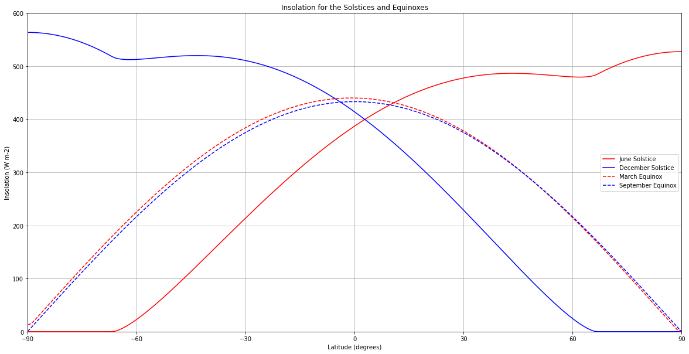
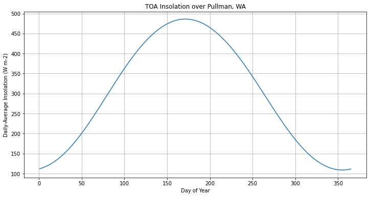
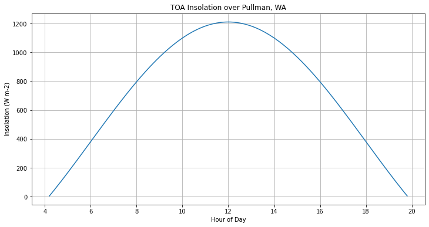

import numpy as np
import matplotlib.pyplot as pltInsolation
Insolation
© Von P. Walden, Washington State University
Calculates the insolation at the top of the atmosphere (TOA) as a function of time and location.
Solar flux per unit area at TOA (Equations from Hartmann, Global Physical Climatology)
\[Q = S_o (d_m/d)^2 \cos(\theta_s)\] where So is the solar “constant”, \(d_m\) is the mean distance between the Earth and Sun, d is the actual distance between the Earth and Sun, and theta(s) is the solar zenith angle.
\(\delta = -23.44^{\circ}\cos{[(t_j+10 days)*(360^{\circ}/365.25 days)]}\) is the declination angle.
\(\cos{\theta_s} = \sin{\phi}sin{\delta} + \cos{\phi}\cos{\delta}\cos{h}\), where phi is the latitude and h is the hour angle.
\(h=(12-t)*(15^{\circ} / 1 hour)\), where t is the local time and 15 is the number of degrees that the Earth rotates in one hour. The conversion factor converts hours to degrees.
\(d_m\) is the mean distance from the Sun to the Earth, and is equal to the length of semi-major axis (a) of the elliptical orbit (which is 149.6 million km).
d is the distance between the Earth and Sun on any given day, where the closest approach (perihelion) occurs on 3 January.
\[ d = \frac{a(1-\epsilon^2)}{1 + \epsilon cos(\theta)} \]
where \(\epsilon\) is the eccentricity of Earth’s orbit (0.017), a is the semi major axis of Earth’s orbit, and \(\theta\) is an angle that relates the day number to the correct location of Earth in the elliptical orbit for that day.
\(Q_{dayavg} = (S_o/\pi)(d_m/d)^2[h_o\sin{\phi}\sin{\delta}+\cos{\phi}\cos{\delta}\sin{h_o}]\), where cos(\(h_o) = -\tan{\phi}\tan{\delta}\).
def earth_sun_distance(day):
a = 149.6e6 # km
e = 0.017
theta = (day - 3) * ((2*np.pi) / 365.25) # This is only an approximation.
d = a*(1-e*e)/(1+e * np.cos(theta))
return ddef declination(day):
dec = -23.44 * np.cos( (2.*np.pi) / 365.25 * (day + 10) ) # Approximate
return decdef solar_zenith_angle(latitude,declinationAngle,hour):
# All angles must be in radians !!
latitude = latitude * (np.pi/180.)
declinationAngle = declinationAngle * (np.pi/180.)
h = 15. * (12. - hour) * (np.pi/180.)
sza = np.arccos(np.sin(latitude)*np.sin(declinationAngle) + np.cos(latitude)*np.cos(declinationAngle)*np.cos(h))
return szadef Qday_avg(latitude,day):
lat = latitude*(np.pi/180.)
So = 1370.
d = earth_sun_distance(day)
dm = 149.6e6
da = declination(day) * (np.pi/180.)
tmp = np.tan(lat)*np.tan(da)
# Obtain this condition from http://en.wikipedia.org/wiki/Insolation
if tmp>1:
ho = np.pi
elif tmp<-1:
ho = 0.
else:
ho = np.arccos(-1.*np.tan(lat)*np.tan(da))
Q = (So/np.pi) * (dm/d)**2 * (ho*np.sin(lat)*np.sin(da) + np.cos(lat)*np.cos(da)*np.sin(ho))
return Qlat = 46.7
day = 31+28+22
print('Declination = ', declination(day))
print('Earth distance = ', earth_sun_distance(day))
print('Q =', Qday_avg(lat, day))Declination = -0.12600714770976626
Earth distance = 148981817.36070523
Q = 300.456485702979Geographic distribution of insolation (solar radition) at TOA
lats = np.arange(-90.,91.)
days = np.arange(1.,366.)
Q = np.array([])
for lat in lats:
for day in days:
Q = np.append(Q, Qday_avg(lat,day))
Qn = np.reshape(Q,(181,365))
plt.figure(figsize=(20,10))
#CS=contourf(days, lats, Qn, range(0,550,50), cmap=plt.cm.RdBu_r)
CS=plt.contour(days, lats, Qn, range(0,550,25), colors='k')
plt.clabel(CS, range(0,550,100) ,inline=1,fmt='%4.0f',fontsize=12)
plt.grid()
plt.xlabel('Day of Year');
plt.ylabel('Latitude (deg)');
plt.title('TOA Insolation as a function of Day of Year and Latitude');
mar20 = 31+28+20
jun21 = 31+28+31+30+31+21
sep20 = 31+28+31+30+31+30+31+31+20
dec21 = 355
plt.figure(figsize=(20,10))
plt.plot(lats,Qn[:,jun21],'r',lats,Qn[:,dec21],'b')
plt.plot(lats,Qn[:,mar20],'r--',lats,Qn[:,sep20],'b--')
#plt.plot(lats,Qn.mean(axis=1),'k') # Annual mean
plt.axis([-90., 90., 0., 600])
plt.grid()
plt.xticks(np.arange(-90., 90.+1, 30.))
plt.xlabel('Latitude (degrees)');
plt.ylabel('Insolation (W m-2)');
plt.title('Insolation for the Solstices and Equinoxes');
plt.legend(['June Solstice', 'December Solstice', 'March Equinox', 'September Equinox'])
Daily Average Insolation over Pullman, WA
days = np.arange(1.,366.)
lat = 46.7298
lon = -117.1817
Q = np.array([])
for day in days:
Q = np.append(Q, Qday_avg(lat,day))
plt.figure(figsize=(12,6))
plt.plot(days, Q)
plt.grid();
plt.xlabel('Day of Year');
plt.ylabel('Daily-Average Insolation (W m-2)');
plt.title('TOA Insolation over Pullman, WA');
Hourly Insolation over Pullman, WA
latitude = 46.7
#day = 31+28+21 # 21 Mar
day = 31+28+31+30+31+21 # 21 Jun
#day = 31+28+31+30+31+30+31+31+21 # 21 Sep
#day = 31+28+31+30+31+30+31+31+30+31+30+21 # 21 Dec
hours = np.arange(0,24.1,0.1)
dm = 149.6e6
d = earth_sun_distance(day)
dec = declination(day)
Q = np.array([])
for hour in hours:
if np.cos(solar_zenith_angle(latitude, dec, hour)) > 0:
Q = np.append(Q, 1361. * (dm/d)**2 * np.cos(solar_zenith_angle(latitude, dec, hour)))
else:
Q = np.append(Q, np.nan)
plt.figure(figsize=(12,6))
plt.plot(hours, Q)
plt.grid();
plt.xlabel('Hour of Day');
plt.ylabel('Insolation (W m-2)');
plt.title('TOA Insolation over Pullman, WA');